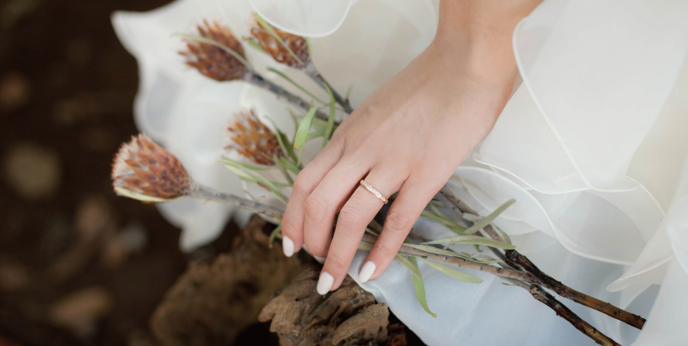
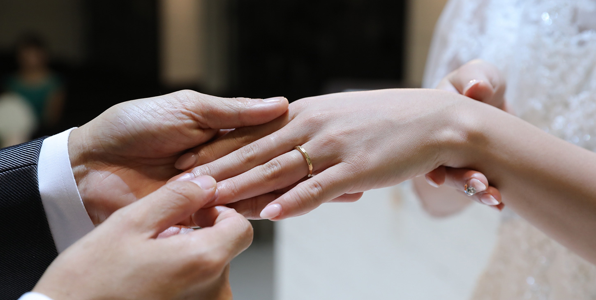
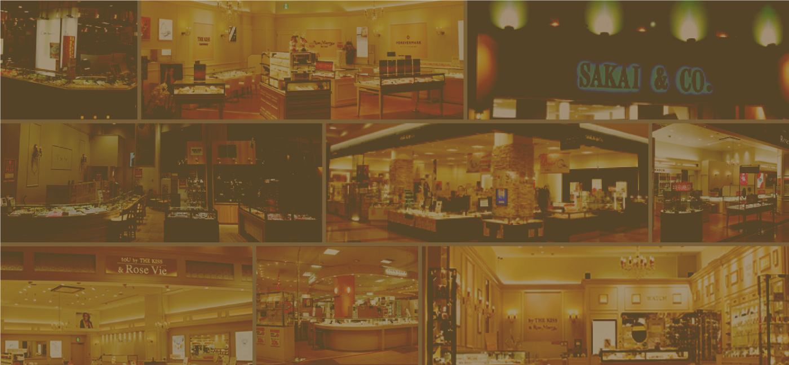

好みを見つける、幅広い選択肢。
複数のブランドから、ご希望のデザインをご提案。見た目だけでなく、毎日の暮らしを思い浮かべながら選びます。

YOUR STORY, YOUR RINGS.
初めての指輪選びに、ひとつの正解はありません。
好きなデザイン、手になじむ着け心地、大切にしたい予算。
ひとつずつ比べながら、ふたりの答えを見つけていく。
愛知・岐阜のブライダルリングセレクトショップ、サカイ。
その時間も、ふたりの大切な思い出になりますように。
MARRIAGE RINGS
気になるデザインから、指輪選びをはじめてみませんか。

Rose Marry
1本 ¥200,200〜
素材・価格・指輪の詳細 →
Rose Marry
1本 ¥200,200
素材・価格・指輪の詳細 →
THE KISS
ペア ¥77,000〜
素材・価格・指輪の詳細 →価格は公式サイトの掲載内容です。最新価格・税込／税別・取扱い状況は店舗へご確認ください。
FIND YOUR MARRIAGE RING
デザイン、予算、素材。大切にしたいことから見比べてみませんか。

OUR BRANDS
それぞれの個性から、心に響く指輪を。
ブランド一覧 →WITH YOU, ALWAYS.
ふたりの想いを聞くことから。
サカイが大切にしていること。
複数のブランドから、ご希望のデザインをご提案。見た目だけでなく、毎日の暮らしを思い浮かべながら選びます。
デザインも予算も、まだ決まっていなくて大丈夫。専門スタッフが、おふたりの指輪選びをご一緒します。
購入後のメンテナンスや修理もご相談いただけます。商品ごとのサービス内容・条件は、店頭でご案内します。
CUSTOMER VOICES
おふたりの大切な指輪選び。その時間を、一緒に。
デザイン確認用のダミーです。以下の口コミ・評価・投稿者は架空の内容で、実際のGoogleマップの口コミではありません。
私たちの好みをそれぞれ聞いてくださり、いくつかの指輪を見比べながら選べました。写真だけでは分からなかった着け心地も試せて、ふたりとも気に入る指輪が見つかりました。
サカイへの口コミ（ダミー）何から選べばよいか分からず伺いましたが、素材やデザインの違いを丁寧に説明していただきました。予算に合わせて提案してくださったので、落ち着いて比較できました。
サカイへの口コミ（ダミー）気になっていた指輪を実際に手に取り、幅や輝きの違いを確かめることができました。購入後のお手入れについても聞けて、長く大切に使うイメージが持てました。
サカイへの口コミ（ダミー）
YOUR FIRST RING
商品一覧でデザインや価格を比較。希望の商品名を控えておくと、ご相談がスムーズです。
ご予約時に希望商品をお伝えください。取扱い・展示状況を確認し、幅や着け心地を店頭で確かめます。
サイズ・素材・刻印の対応を相談。2本の総額、追加費用、納期、購入後のサービスを確認します。
ご注文時に受取予定をご確認ください。大切な日に間に合うよう、余裕を持ったご相談がおすすめです。
FIRST VISIT
QUESTIONS
ご希望をお聞きしながら、専門スタッフが指輪をご提案します。まずは気になるデザインや、普段の暮らしについてお聞かせください。
取扱いブランド・展示商品は店舗により異なります。ご来店前に、希望する商品名と店舗を添えてお問い合わせください。
サイズ直しや修理のご相談を受け付けています。対応可否・料金・保証条件は、商品や状態によって異なります。
受け取りたい日から逆算して、余裕を持ってご相談ください。納期は商品・サイズ・加工内容で異なるため、必要な日程を店舗にお伝えいただき、注文前にご確認ください。
対応はブランドや商品によって異なります。刻印できる文字・文字数、素材の選択肢、追加費用、納期への影響を、希望商品とあわせて店舗へご相談ください。
在庫やサイズ、加工の有無によって異なります。お急ぎの場合は、希望商品・サイズ・受取希望日を来店前にお伝えください。
商品によって異なります。「1本」「ペア」の表示と商品詳細をご確認ください。比較するときは、素材・サイズ・刻印などを含む2本の総額と税込価格を店舗で確認しましょう。
LET’S FIND YOUR RINGS.
愛知・岐阜のサカイでお待ちしています。
来店を予約する ↗まずはメールで相談する →